每个人，在每个人生阶段，都有自己心目中的一份经典书单
如果没有书可以读，一生的时光会是怎样的索然无味。如果没有书去传承，人类的历史将会如何演化。每个人，在每个人生阶段，都有自己心目中的一份经典书单。
| sn | 类别 | 书名 | GT | ||
| 1 | 科普 | 从一到无穷大 | N49/G39-2 | 北7楼0001列B面02架 | |
| 2 | 科普 | 时间简史 | |||
| 3 | 科普 | 万物简史 | |||
| 4 | 历史 | 大历史 | |||
| 5 | 历史 | 极简宇宙史 | |||
| 6 | 历史 | 全球通史 | |||
| 7 | 历史 | 人类简史 | |||
| 8 | 随笔 | 沉默的大多数 | I267/6931 | 阅读体验区(不外借) | 北4楼0052列A面03架 |
| 9 | 小说 | 百年孤独 | 北4楼0109列B面03架 | ||
| 10 | 小说 | 不能承受的生命之轻 | I524/64 | 北4楼0079列A面05架 | |
| 11 | 小说 | 红与黑 | |||
| 12 | 小说 | 活着 | |||
| 13 | 小说 | 老人与海 | |||
| 14 | 小说 | 飘 | |||
| 15 | 小说 | 平凡的世界 | |||
| 16 | 小说(科幻) | 冰与火之歌 | I712.4 | 北4楼0098列B面03架 | |
| 17 | 小说(科幻) | 巨人的陨落 | 北4楼0084列A面04架 | ||
| 18 | 小说(科幻) | 三体 | |||
| 19 | 小说(科幻) | 银河帝国 | I712.4/4901/5 | 北4楼0104列A面03架 | |
| 20 | 小说(推理) | 白夜行 | I313.4/813 | 文学图书区（非中国小说） | 北4楼0063列B面05架 |
| 21 | 小说(推理) | 东方快车谋杀案 | 黄埔图书馆 | ||
| 22 | 哲学 | 苏菲的世界 | I533/143 | 北4楼0079列B面05架 | |
| 23 | 传记 | 佛陀传 | B949/830 | 北5楼0025列B面02架 |
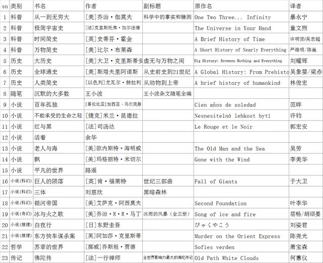
1 《从一到无穷大》
副标题：科学中的事实和臆测
原作名：One Two Three... Infinity
作者：[美]乔治·伽莫夫
译者：暴永宁
类别：科普
《从一到无穷大》以生动的语言介绍了20世纪以来科学中的一些重大进展。先漫谈一些基本的数学知识，然后用一些有趣的比喻，阐述了爱因斯坦的相对论和四维时空结构，并讨论了人类在认识微观世界（如基本粒子、基因）和宏观世界（如太阳系、星系等）方面的成就。
十分浅显易懂、深入浅出的科普书，对入门者有一个很好的引领，涵盖范围很广，数论、相对论、微观粒子、宏观宇宙都有涉及。
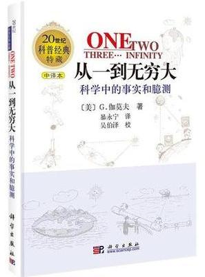
“运动系统中时间变慢这个情况，为星际旅行提供了一个有趣的现象。 假定你打算到天狼星——距离我们 9 光年——的行星上去，于是，你坐上了几乎有光速那么快的飞船。你大概会认为，往返一趟至少要 18 年，因此打算携带大量食物。不过，如果你乘坐的飞船确实有近于光速的速度，那么，这种小心就是完全多余的了。事实上，如果飞船的速度达到光速的 99.999 999 99%，你的手表、心脏、呼吸、消化和思维都将减慢 7 万倍，因此从地球到天狼星往返一趟所花费的 18 年（从留在地球上的人看来）在你看来只不过是几小时而已。”
“如果你吃过早饭便从地球出发，那么，当降落在天狼星某一行星的表面上时，正好可以吃中饭。要是你的时间很紧，吃过午饭后马上返航，就可以赶回地球上吃晚饭。不过，如果你忘了相对论原理，那你到家时准得大吃一惊：因为你的亲友会认为你一定还在宇宙空间中的什么地方，因而已经自顾自地吃过 6570 顿晚饭了！地球上的 18年，对你这个近于光速的旅客来说，只不过是一天而已。”
2 《极简宇宙史》
原作名：The Universe in Your Hand
作者：[法]克里斯托弗·加尔法德
译者：童文煦
类别：历史
霍金亲传弟子、物理学博士克里斯托弗·加尔法德带领我们踏上一场关于宇宙的过去、现在和未来的惊奇之旅。不需要图表和方程式，只需凭着奇诡的想象，我们就可走向衰亡的太阳表面，飞越遥远的星系，感受来自黑洞的死亡魅力……你可以轻松读懂时至今日的宇宙神奇，继续探究关于上帝的存在、时间的起源以及人类的未来。
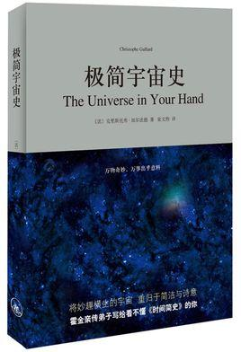
"太阳发出的光线要花八分二十秒才能走完我们与它之间的1.5亿公里的距离，意味着如果太阳从现在起不再发光，我们也只有在八分二十秒后才知道这个（相当大的）灾难。这还意味着，在地球上，你只能看见八分二十秒以前太阳的样子，永远不可能是当下的样子。在一个阳光晴朗的白天闪耀着的太阳事实上永远不会是你看到它时的样子，甚至它都不在你看得到它的地方。在它的光线到达你的皮肤所需要的八分二十秒的时间里，太阳在他绕着银河系中心轨道上移动了大约117,300公里。"
3 《时间简史》
原作名：A Brief History of Time
作者：[英]史蒂芬·霍金
译者：许明贤/吴忠超
类别：科普
《时间简史》讲述是探索时间和空间核心秘密的故事，是关于宇宙本性的最前沿知识，包括我们的宇宙图像、空间和时间、膨胀的宇宙不确定性原理、基本粒子和自然的力、黑洞、黑洞不是这么黑、时间箭头等内容。
自1988年首版以来，《时间简史》已成为全球科学著作的里程碑。它被翻译成40种文字，销售了近1000万册。
《果壳中的宇宙》（《the Universe in a Nutshell》）是史蒂芬·霍金2001年的以一力作。（该书围绕主题是宇宙学，涉及广义相对论、量子论、黑洞、暴胀、时间旅行、弦论、超引力等诸多前沿概念。）
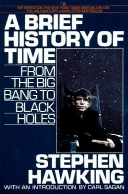
“我们看到的从很远星系来的光是在几百万年之前发出的，在我们看到的最远的物体的情况下，光是在80亿年前发出的。这样当我们看宇宙时，我们是在看它的过去。”
“常识告诉我们，如果不进行外加干涉，事物总是倾向于增加它的无序度。”
4 《万物简史》
原作名：A Short History of Nearly Everything
作者：[美]比尔·布莱森
译者：严维明/陈邕
类别：科普
这是一部有关现代科学发展史的既通俗易懂又引人入胜的书，作者用清晰明了、幽默风趣的笔法，将宇宙大爆炸到人类文明发展进程中所发生的繁多妙趣横生的故事一一收入笔下。惊奇和感叹组成了本书，历历在目的天下万物组成了本书，益于人们了解大千世界的无穷奥妙，掌握万事万物的发展脉络。

Life, in short, just wants to be.
简言之，生命的目的只是为了存在。
空间是弯曲的，恰好使其无限而又有限。恰当地说，甚至不能说空间在不断膨胀…
5 《大历史》
副标题：虚无与万物之间
原作名：Big History: Between Nothing and Everything
作者：[美]大卫·克里斯蒂安 辛西娅·斯托克斯·布朗 克雷格·本杰明
译者：刘耀辉
类别：历史
《大历史》所考察的不仅仅是人类的过去，还包括地球的过去，乃至宇宙的过去。阅读本书，读者将会追溯一段始于138亿年前的历史，这段历史以大爆炸和宇宙出现为开端。大历史包含了宇宙学、地球与生命科学、人文历史等领域的研究成果，并将它们融合为一种单一的、具有普遍性的历史叙述，对宇宙以及我们在其中的位置做出了尽可能科学、全面的介绍。
书中总结出大历史演进中的八大突破，每一次突破都意味着某种全新事物的出现。他们将这些突破称为“门槛”。从宇宙到地球，从最初的生命到人类，从农耕文明到现代革命，作者按照从“无”到“有”的顺序，以八次突破为线索，勾勒出世间万物的产生与发展。最终，本书以大历史的视角，对我们的近期未来和遥远未来做出了预测。
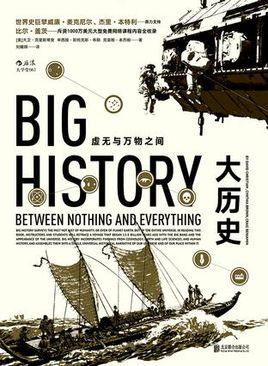
“金凤花环境Goldilocks conditions，指各种条件刚好适合更复杂事物出现的环境－不是太热也不是太冷、不是太大也不是太小、不是太远也不是太近、不太空旷也不太密集，如此等等。”
6 《全球通史》
副标题：从史前史到21世纪
原作名：A Global History: From Prehistory to the 21st Century
作者：[美]斯塔夫里阿诺斯
译者：吴象婴/梁赤民/董书慧/王昶
类别：历史
主要讲述了世界历史的进化，世界文明的发展及其对现代社会的影响。作者着眼于全球，侧重于那些有影响的、促进历史发展的历史事件，其中包括原始社会、欧亚大陆的古代文明、欧亚大陆的原始文明、欧亚以外的世界、地区分割后的世界、西方世界的崛起、西方人统治的世界、西方的衰落与成功等八个主要的部分。
作者在本书中采用全新的史学观点和方法，将整个世界看作一个不可分割的有机的统一体，从全球的角度而不是从某一国家或某一地区的角度来考察世界各地区人类文明的产生和发展，把研究重点放在对人类历史进程有重大影响的诸历史运动、诸历史事件和它们之间的相互关联和相互影响上，努力反映局部与整体的对抗以及它们之间的相互作用。本书一经问世，受到著名历史学家汤因比和巴勒棵拉夫高度评价，立即被译成多种文字，流传甚广，影响很大。
《全球通史》上起人类的起源，下迄21世纪初多极世界相待时期，上下数十万年，一气呵成。除了政治、经济外，还涉及军事、文化、教育、宗教、科学技术、人口、移民、种族关系、道德风尚、思想意识等各个方面。读来颇觉新颖爽朗，有强烈的现实感。从文字内容来看，作者对庞杂的史料取舍恰当，对各种历史事件着笔简要，边叙边议，文字生动；从编写技巧来看，每章前冠以简明提要，承上启下，便于掌握线索，每章末附有选读书目，便于进一步研究。
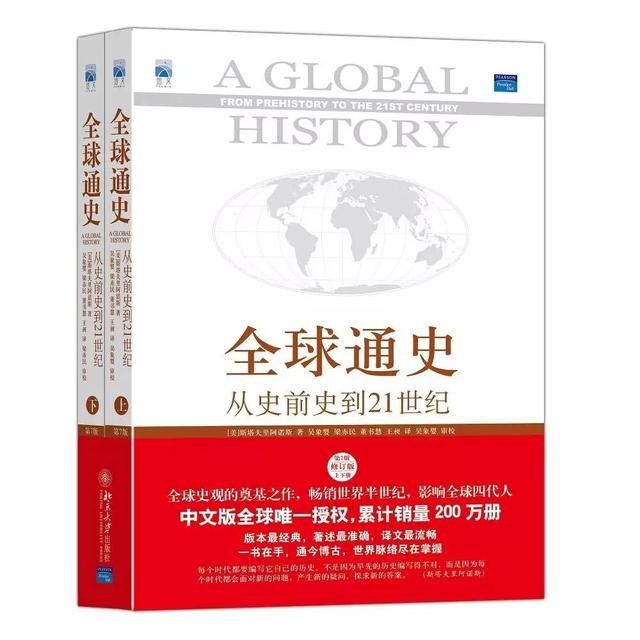
"在消灭了所有可能的对手之后，人类不再面对任何敌人，我们面对的只有自己。"
"社会变革滞后于技术变革一直是人类许多灾难的根源。"
"被赋予高级智能的人类则能够通过使用火种、缝制衣服、建造房屋等方法来让环境适应自己的需要。因此，人类是能够使环境适应自己的需要，从而成为自己命运的主人而不是奴仆的独一无二的物种"
7 《人类简史》
副标题：从动物到上帝
原作名：A brief history of humankind
作者：[以色列]尤瓦尔·赫拉利
译者：林俊宏
类别：历史
《人类简史：从动物到上帝》是以色列新锐历史学家的一部重磅作品。从十万年前有生命迹象开始到21世纪资本、科技交织的人类发展史。十万年前，地球上至少有六个人种，为何今天却只剩下了我们自己？我们曾经只是非洲角落一个毫不起眼的族群，对地球上生态的影响力和萤火虫、猩猩或者水母相差无几。为何我们能登上生物链的顶端，最终成为地球的主宰？
从认知革命、农业革命到科学革命，我们真的了解自己吗？我们过得更加快乐吗？我们知道金钱和宗教从何而来，为何产生吗？人类创建的帝国为何一个个衰亡又兴起？为什么地球上几乎每一个社会都有男尊女卑的观念？为何一神教成为最为广泛接受的宗教？科学和资本主义如何成为现代社会最重要的信条？理清影响人类发展的重大脉络，挖掘人类文化、宗教、法律、国家、信贷等产生的根源。这是一部宏大的人类简史，更见微知著、以小写大，让人类重新审视自己。
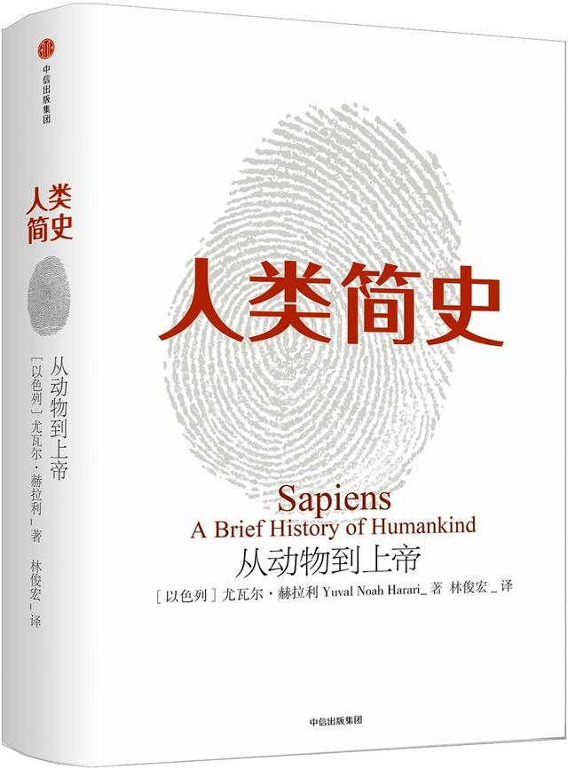
“人类几乎从出生到死亡都被种种虚构的故事和概念围绕，让他们以特定的方式思考，以特定的标准行事，想要特定的东西，也遵守特定的规范。就是这样，让数百万计的陌生人能遵照着这种人造而非天生的直觉，合作无间。这种人造的直觉就是‘文化’。”
“历史的铁则就是：事后看来无可避免的事，在当时看来总是毫不明显。”
“就算是在宗教上水火不容的基督徒和穆斯林，也可以在金钱制度上达成同样的信仰。原因就在于宗教信仰的重点是自己相信，但金钱信仰的重点是"别人相信"。”
“比起语言、法律、文化、宗教和社会习俗，钱的心胸更为开阔。所有人类创造的信念系统之中，只有金钱能够跨越几乎所有文化鸿沟，不会因为宗教、性别、种族、年龄或性取向而有所歧视。也多亏有了金钱制度，才让人就算互不相识、不清楚对方人品，也能携手合作。”
“人类语言真正最独特的功能，在于能够传达关于一些根本不存在的事物的信息。”
“历史在人类创造神的时候开始，在人类成为神的时候终结。”
8 《沉默的大多数》
副标题：王小波杂文随笔全编
作者：王小波
类别：随笔
这本杂文随笔集包括思想文化方面的文章，涉及知识分子的处境及思考，社会道德伦理，文化论争，国学与新儒家，民族主义等问题；包括从日常生活中发掘出来的各种真知灼见，涉及科学与邪道，女权主义等；包括对社会科学研究的评论，涉及性问题，生育问题，同性恋问题，社会研究的伦理问题和方法问题等；包括创作谈和文论，如写作的动机，作者的师承，作者对小说艺术的看法，作者对文体格调的看法，对影视的看法等；包括少量的书评，其中既有对文学经典的评论，也有对当代作家作品的一些看法；最后，还包括一些域外生活的杂感以及对某些社会现象的评点。
作者王小波所虚构的艺术之美，以及他通过对现实世界的批评所传播的自由主义理念，已经在这个世界的文化和思想宝库中占据了一席之地。而到今天，这些话语、这些思想仍是我们的社会所需要的。
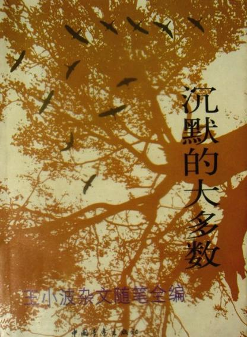
"我选择沉默的主要原因之一：从话语中，你很少能学到人性，从沉默中却能。假如还想学得更多，那就要继续一声不吭 。"
"在我周围，像我这种性格的人特多——在公众场合什么都不说，到了私下里却妙语连珠，换言之，对信得过的人什么都说，对信不过的人什么都不说。保持沉默是怯懦的。"
"我相信这不是我一个人的经历：傍晚时分，你坐在屋檐下，看着天慢慢地黑下去，心里寂寞而凄凉，感到自己的生命被剥夺了。当时我是个年轻人，但我害怕这样生活下去，衰老下去。在我看来，这是比死亡更可怕的事。"
"我对自己的要求很低：我活在世上，无非想要明白些道理，遇见些有趣的事。倘能如我愿，我的一生就算成功。"
9 《百年孤独》
原作名：Cien años de soledad
作者：[哥伦比亚]加西亚·马尔克斯
译者：范晔
类别：小说
《百年孤独》是魔幻现实主义文学的代表作，描写了布恩迪亚家族七代人的传奇故事，以及加勒比海沿岸小镇马孔多的百年兴衰，反映了拉丁美洲一个世纪以来风云变幻的历史。作品融入神话传说、民间故事、宗教典故等神秘因素，巧妙地糅合了现实与虚幻，展现出一个瑰丽的想象世界，成为20世纪最重要的经典文学巨著之一。1982年加西亚•马尔克斯获得诺贝尔文学奖，奠定世界级文学大师的地位，很大程度上乃是凭借《百年孤独》的巨大影响。
作家以生动的笔触，刻画了性格鲜明的众多人物，描绘了这个家族的孤独精神。在这个家族中，夫妻之间、父子之间、母女之间、兄弟姐妹之间，没有感情沟通，缺乏信任和了解。尽管很多人为打破孤独进行过种种艰苦的探索，但由于无法找到一种有效的办法把分散的力量统一起来，最后均以失败告终。这种孤独不仅弥漫在布恩迪亚家族和马孔多镇，而且渗入了狭隘思想，成为阻碍民族向上、国家进步的一大包袱。
《百年孤独》中浸淫着的孤独感，其主要内涵应该是对整个苦难的拉丁美洲被排斥在现代文明世界的进程之外的愤懑和抗议，是作家在对拉丁美洲近百年的历史，以及这块大陆上人民独特的生命力、生存状态、想象力进行独特的研究之后形成的倔强的自信。这个古老的家族也曾经在新文明的冲击下，努力地走出去寻找新的世界，尽管有过畏惧和退缩，可是他们还是抛弃了传统的外衣，希望融入这个世界。可是外来文明以一种侵略的态度来吞噬这个家族，于是他们就在这样一个开放的文明世界中持续着“百年孤独”。作者表达着一种精神状态的孤独来批判外来者对拉美大陆的一种精神层面的侵略，以及西方文明对拉美的歧视与排斥。“羊皮纸手稿所记载的一切将永远不会重现，遭受百年孤独的家族，注定不会在大地上第二次出现了。” 作者用一个毁灭的结尾来表达了自己深深的愤懑。
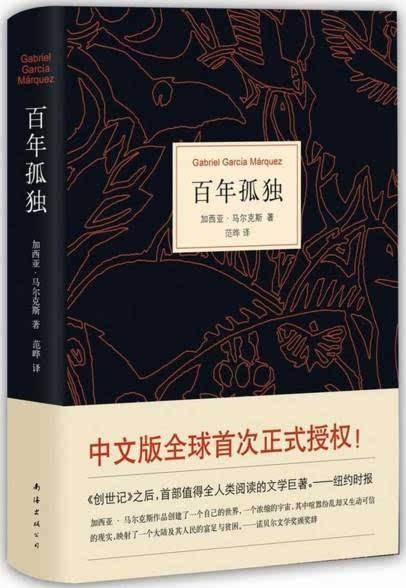
“无论走到哪里，都应该记住，过去都是假的，回忆是一条没有尽头的路，一切以往的春天都不复存在，就连那最坚韧而又狂乱的爱情归根结底也不过是一种转瞬即逝的现实。”
“我们趋行在人生这个亘古的旅途，在坎坷中奔跑，在挫折里涅槃，忧愁缠满全身，痛苦飘洒一地。我们累，却无从止歇；我们苦，却无法回避。”
“所有人都显得很寂寞，用自己的方式想尽办法排遣寂寞，事实上仍是延续自己的寂寞。寂寞是造化对群居者的诅咒，孤独才是寂寞的唯一出口。
“生命从来不曾离开过孤独而独立存在。无论是我们出生、我们成长、我们相爱还是我们成功失败，直到最后的最后，孤独犹如影子一样存在于生命一隅。”
10 《不能承受的生命之轻》
原作名：Nesnesitelná lehkost bytí
作者：[捷克]米兰·昆德拉
译者：许钧
类别：小说
《不能承受的生命之轻》是米兰·昆德拉最负盛名的作品。小说描写了托马斯与特丽莎、萨丽娜之间的感情生活。但它不是一个男人和两个女人的三角性爱故事，它是一部哲理小说，小说从“永恒轮回”的讨论开始，把读者带入了对一系列问题的思考中，比如轻与重、灵与肉。
《不能承受的生命之轻》是一部意象繁复的书，其中装载了多种涵义：被政治化了的社会内涵的揭示、人性考察、个人命运在特定历史与政治语境下的呈现，以及对两性关系本质上的探索等。昆德拉将这些元素糅合在一起，写成一部非同凡响的小说——其中既有隐喻式的哲学思考，也有人的悲欢离合的生命历程的展现。
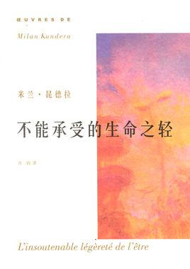
“从现在起，我开始谨慎地选择我的生活，我不再轻易让自己迷失在各种诱惑里。我心中已经听到来自远方的呼唤，再不需要回过头去关心身后的种种是非与议论。我已无暇顾及过去，我要向前走.”
“人永远都无法知道自己该要什么，因为人只能活一次，既不能拿它跟前世相比，也不能在来生加以修正。没有任何方法可以检验哪种抉择是好的，因为不存在任何比较。一切都是马上经历，仅此一次，不能准备。”
“压倒她的不是重，而是不能承受的生命之轻。”
11 《红与黑》
原作名：法语：Le Rouge et le Noir英文：Scarlet and Black
作者：[法]司汤达
译者：郭宏安
类别：小说
年轻人于连一步步向上爬却最终跌落谷底，法国批判现实主义之父司汤达借此批判法国封建贵族与新兴资产阶级的赤裸裸的斗争。《红与黑》在心理深度的挖掘上远远超出了同时代作家所能及的层次。它开创了后世“意识流小说”、“心理小说”的先河。后来者竞相仿效这种“司汤达文体”，使小说创作“向内转”，发展到重心理刻画、重情绪抒发的现代形态。人们因此称司汤达为"现代小说之父"。《红与黑》发表100多年来，被译成多种文字广为流传，并被多次改编为戏剧、电影。
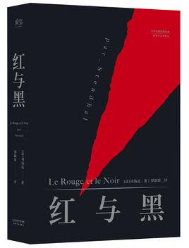
"The traveller who has just climbed a steep mountain sits down on the summit,and finds a perfect pleasure in resting,Would he be happy if he were forced to rest always."
Her life was heaven and hell,hell when she did not see Julien,Heaven when she was at his heet.
Ah, unhappy woman!Of what can I complain?heaven is just,I have not acquired merit by putting a stop to my crime;it blinds my judgement.It rested with me alone to win over Elisa with a bribe,nothing would have been easier.i did not take the trouble to reflect for a moment,the wild imaginings of love absorbed all my time.And now i perish.
“每个人的心底都有一座坟墓，是用来埋葬所爱的人的。”
“我从地狱来，要到天堂去，正路过人间。”
“于连看见一只雄鹰从头顶上那些巨大的山岩中展翅高飞，在长空中悄然盘旋，不时划出一个个巨大的圆圈。于连目不转睛的凝视着这只猛禽。其动作的雄健与安详令他怦然心动。他羡慕这种力量，他羡慕这种孤独。”
12 《活着》
作者：余华
类别：小说
《活着》是作家余华的代表作之一，讲诉了在大时代背景下，随着内战、三反五反，大跃进，文化大革命等社会变革，徐福贵的人生和家庭不断经受着苦难，到了最后所有亲人都先后离他而去，仅剩下年老的他和一头老牛相依为命。
从国民党统治后期到解放战争、土改运动，再到大炼钢铁运动，自然灾害时期等，作者经历了从大富大贵到赤贫如洗的物质生活的巨大变迁，经历了多次运动给他带来的窘迫和不幸，更是一次次目睹妻儿老小先他而去。后来，作者听到了一首美国民歌《老黑奴》，歌中那位老黑奴经历了一生的苦难，家人都先他而去，而他依然友好地对待这个世界，没有一句抱怨的话。这首歌深深地打动了作者，作者决定写下一篇这样的小说，于是就有了1992年的《活着》。写人对苦难的承受能力，对世界乐观的态度。人是为活着本身而活着的，而不是为了活着之外的任何事物所活着。
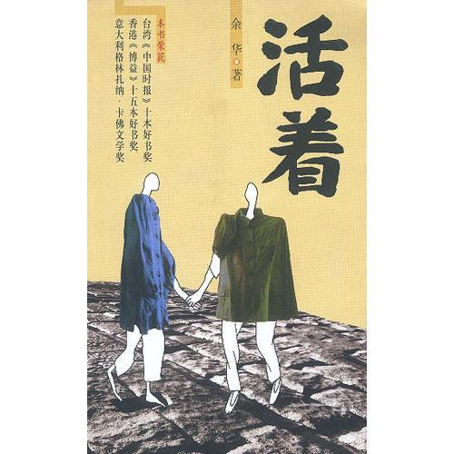
“作为一个词语，“活着”在我们中国的语言里充满了力量，它的力量不是来自于喊叫，也不是来自于进攻，而是忍受，去忍受生命赋予我们的责任，去忍受现实给予我们的幸福和苦难、无聊和平庸。”
“生命是属于每个人自己的感受，不属于任何别人的看法。”
“以笑的方式哭，在死亡的伴随下活着。”
13 《老人与海》
原作名：The Old Man and the Sea
作者：[美]欧内斯特·海明威
译者：吴劳
类别：小说
《老人与海》是海明威最著名的作品之一，它围绕一位老年古巴渔夫，与一条巨大的马林鱼在离岸很远的湾流中搏斗的故事。海明威电报式的简洁有力的写作风格，“冰山”原则指导下的荡人心魄描写，都在这片文章中得到了淋漓尽致的展现。海上捕鱼老人的拼搏、勇毅、不屈服，让每个人心中都波涛汹涌。
老人与海》这本小说是根据真人真事写的。第一次世界大战结束后，海明威移居古巴，认识了老渔民格雷戈里奥·富恩特斯。1930年，海明威乘的船在暴风雨中沉没，富恩特斯搭救了海明威。从此，海明威与富恩特斯结下了深厚的友谊，并经常一起出海捕鱼。
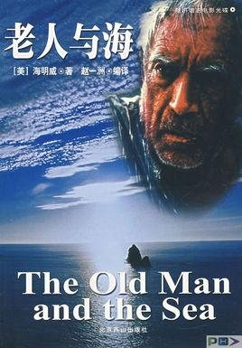
“一个人可以被毁灭，但不能被打败。”
“现在不是去想缺少什么的时候，该想一想凭现有的东西你能做什么。”
“老人消瘦而憔悴，脖颈上有些很深的皱纹。腮帮上有些褐斑，那是太阳在热带海面上反射的光线所引起的良性皮肤癌变。褐斑从他脸的两侧一直蔓延下去，他的双手常用绳索拉大鱼，留下了刻得很深的伤疤。但是这些伤疤中没有一块是新的。它们像无鱼可打的沙漠中被侵蚀的地方一般古老。他身上的一切都显得古老，除了那双眼睛，它们像海水一般蓝，是愉快而不肯认输的。”
14 《飘》
原作名：Gone with the Wind
作者：[美]玛格丽特·米切尔
译者：李美华
类别：小说
小说中的故事发生在1861年美国南北战争前夕。生活在南方的少女郝思嘉从小深受南方文化传统的熏陶，可在她的血液里却流淌着野性的叛逆因素。随着战火的蔓廷和生活环境的恶化，郝思嘉的叛逆个性越来越丰满，越鲜明，在一系列的的挫折中她改造了自我，改变了个人甚至整个家族的命运，成为时代时势造就的新女性的形象。
作品在描绘人物生活与爱情的同时，勾勒出南北双方在政治，经济，文化各个层次的异同，具有浓厚的史诗风格，堪称美国历史转折时期的真实写照，同时也成为历久不衰的爱情经典。
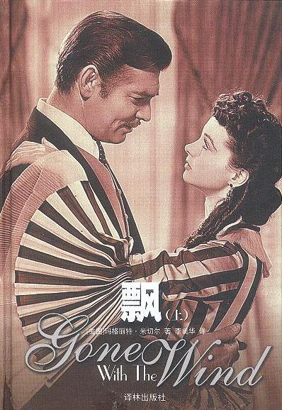
“所有随风而逝的都属于昨天的，所有历经风雨留下来的才是面向未来的。”
“After all, tomorrow is another day.”
15 《平凡的世界》
作者：路遥
类别：小说
《平凡的世界》是中国作家路遥创作的一部百万字的小说。这是一部全景式地表现中国当代城乡社会生活的长篇小说，全书共三部。1986年12月首次出版。
该书以中国70年代中期到80年代中期十年间为背景，通过复杂的矛盾纠葛，以孙少安和孙少平两兄弟为中心，刻画了当时社会各阶层众多普通人的形象；劳动与爱情、挫折与追求、痛苦与欢乐、日常生活与巨大社会冲突纷繁地交织在一起，深刻地展示了普通人在大时代历史进程中所走过的艰难曲折的道路。1991年3月，《平凡的世界》获中国第三届茅盾文学奖。
感动于人对美好的不懈追求、人性的美好，虽然平凡，却很美好。
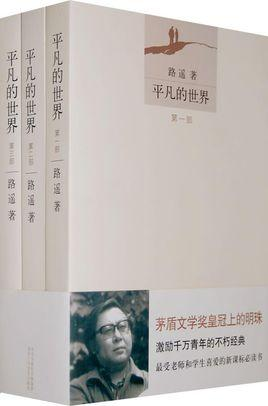
“无论精神多么独立的人，感情却总是在寻找一种依附，寻找一种归宿。”
“连伟人的一生都充满了那么大的艰辛，一个平凡人吃点苦又算得了什么呢？”
“人活着，就得随时准备经受磨难。”
“生活不能等待别人来安排，要自己去争取和奋斗；而不论其结果是喜是悲，但可以慰藉的是，你总不枉在这世界上活了一场。有了这样的认识，你就会珍重生活，而不会玩世不恭；同时，也会给人自身注入一种强大的内在力量。”
“人生啊，是这样不可预测，没有永恒的痛苦，也没有永恒的幸福，生活像流水一般，有时是那么平展，有时又是那么曲折。”
16 《巨人的陨落》
副标题：世纪三部曲
原作名：Fall of Giants
作者：[英]肯·福莱特
译者：于大卫
类别：小说(科幻)
在第一次世界大战的硝烟中，每一个迈向死亡的生命都在热烈地生长——威尔士的矿工少年、刚失恋的美国法律系大学生、穷困潦倒的俄国兄弟、富有英俊的英格兰伯爵，以及痴情的德国特工… 从充满灰尘和危险的煤矿到闪闪发光的皇室宫殿，从代表着权力的走廊到爱恨纠缠的卧室，五个家族迥然不同又纠葛不断的命运逐渐揭晓，波澜壮阔地展现了一个我们自认为了解，但从未如此真切感受过的20世纪。帝国衰落，英雄崛起，真爱无敌。你会忍不住和书里的角色在战火硝烟中同呼吸、共命运。
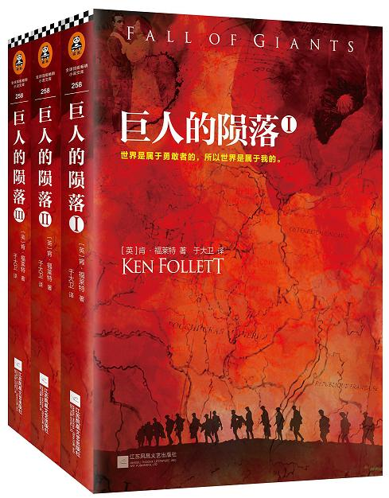
A baby was like a revolution. You could start one, but you could not control how it would turn out.
一个孩子的成长就像一场革命。你可以发动一场革命，但你无法控制它最终的结果。
一次心跳的短暂瞬间，他便认定这是所有女性中他最想娶之为妻的人。
17 《三体》
副标题：地球往事、黑暗森林、死神永生三部曲
作者：刘慈欣
类别：小说(科幻)
《三体》是刘慈欣创作的系列长篇科幻小说，由《三体》、《三体Ⅱ·黑暗森林》、《三体Ⅲ·死神永生》组成，第一部于2006年5月起在《科幻世界》杂志上连载，第二部于2008年5月首次出版，第三部则于2010年11月出版。
三体》具有深切的社会意识，小说中逐渐浮现出的“宇宙社会学”，纠结在制度建构与人性道德的冲突之上，实际上也更为直接地将“中国经验”的难题投放在整个宇宙的尺度之上。可以说刘慈欣构思的“三体世界”尽管有着上亿光年的时空，其实却并不遥远。正是以现实情景为基点构想出的《三体》的宏大世界，明确地建立在“如果存在外星文明，那么宇宙中有共同的道德准则吗？”的道德追问之上。更具体地说，《三体》中描绘了两个层面的道德：零道德的宇宙本身——更高智慧如“歌者”向太阳系抛出二向箔，使整个太阳系二维化，人类文明从此灭亡；但刘慈欣着力去写的还有“有道德的人类文明如何在这样一个宇宙中生存？”这两种假想条件放在宇宙背景中，看似是空想，却深深地扎根在人被卷入历史困境时的切身境况之中。《三体》中多次写到生死攸关的抉择时刻，关系到文明的兴亡，人性的存灭。这些时刻映现出与作者和读者都面对的现实历史息息相关的道德困境。由此，刘慈欣的情节构思纠结在两个向度的道德上：一切为了生存的零道德，与有善恶之分的道德。他铺陈的宏伟叙述，最终展现的情节走向，是有道德的人类（或任何生命）无法在零道德的宇宙生存下去。《三体》跌宕起伏的故事线索，是人类一次次凭借理想和理性为保存自身作出努力，最终“歌者”来临，黑暗森林打击到来。但刘慈欣让程心一直活了下去，她成为三体和地球文明的最后幸存者之一。这个存亡攸关的宇宙史诗之中，整个物种和世界的灭亡，与一个人的保存构成了平衡 。
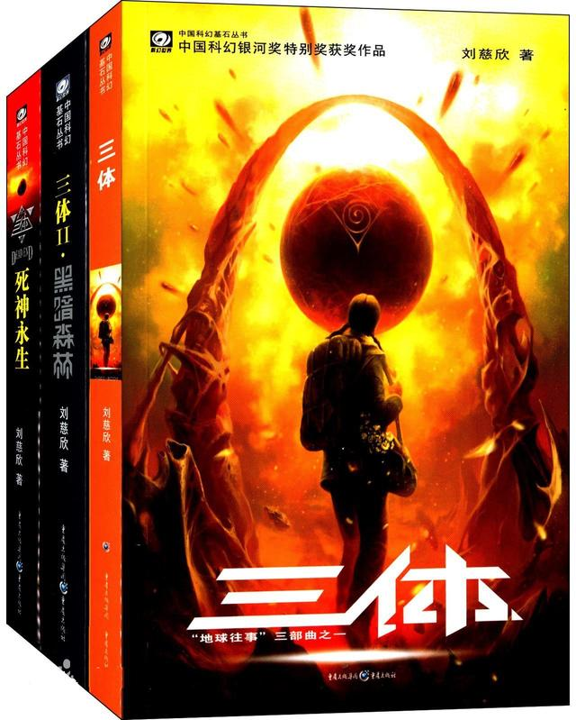
“仰望夜空，觉得群星就像发光的沙漠，我自己就是一个被丢弃在沙漠上的可怜孩子……我有那种感觉：地球生命真的是宇宙中偶然里的偶然，宇宙是个空荡荡的大宫殿，人类是这宫殿中唯一的一只小蚂蚁。这想法让我的后半辈子有一种很矛盾的心态：有时觉得生命真珍贵，一切都重如泰山；有时又觉得人是那么渺小，什么都不值一提。”
“死亡是一座永恒的灯塔，不管你驶向何方，最终都会朝它转向。一切都将逝去，只有死神永生”
“人类历史上最大的不平等：在死亡面前的不平等。”
“在历史上，社会不平等主要出现在经济和社会地位领域，所有人在死亡面前基本上是平等的。当然，死亡上的不平等也一直存在，比如医疗条件的不均、因贫富差距造成的在自然灾害中不同的生存率、战争中军队与平民的生存差异等等，但还从来没有出现过这样的局面：占人类总数不到万分之一的少数人能够躲到安全之处生存下来，而剩下的几十亿人在地球上等死。”
18 《银河帝国》
副标题：基地
原作名：Galactic Empire：Foundation
作者：[美]艾萨克·阿西莫夫
译者：叶李华
类别：小说(科幻)
“人类历史上最好看的系列小说”，地球人公认的“科幻圣经”。《银河帝国》是人类想象力的极限，人类历史上最有趣迷人的故事，讲述人类未来两万年的历史。
《银河帝国：基地》讲述了在统治银河系达一万两千年之久的银河帝国逐渐走向衰亡期间，只有心理史学的一代宗师哈里·谢顿预见未来银河将会经历一段长达三万年、充满无知、野蛮和战争的黑暗时期，于是设立集合帝国中最优秀的科学家，来到银河边缘的一个荒凉行星建立“基地”，使之成为未来世代人类的希望灯塔的科幻史诗故事，共由五个短篇故事组成。
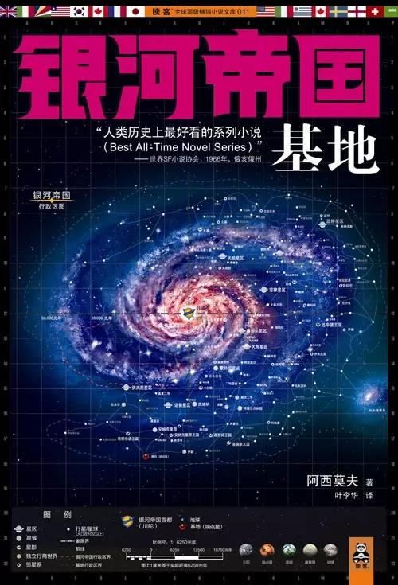
19 《冰与火之歌》
原作名：Song of ice and fire.
作者：[美]乔治·R·R·马丁
译者：屈畅/胡绍晏
类别：小说(奇幻)
《冰与火之歌》由美国著名科幻奇幻小说家乔治·R·R·马丁所著，是当代奇幻文学一部影响深远的里程碑式的作品。它于1996年刚一问世，便以别具一格的结构，浩瀚辽阔的视野，错落有致的情节和生动活泼的语言，迅速征服了欧美文坛。迄今，本书已被译为数十种文字，并在各个国家迭获大奖。
本书主要描述了在一片虚构的中世纪大陆上所发生的一系列相互联系的宫廷斗争、疆场厮杀、游历冒险和魔法抗衡的故事，全书七卷（包括未出的各卷）浑然一体，共同组成了一幅壮丽而完整的画卷。书名“冰与火”，为的是突出人性挣扎的含义，书中塑造了无数的人物，但其着眼点，却并非孤立地凸现英雄主义，奉献精神或奸猾阴谋，而是将书中人物放在一个“真人”的角度，写出他或她在时代和社会的旋涡中不同的境遇与选择。2011年，《冰与火之歌》被美国HBO电视网改编成了电视剧《权力的游戏》。
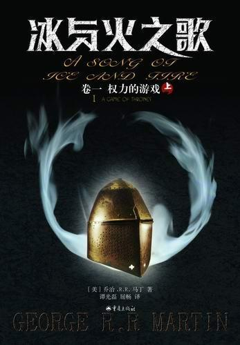
Bran:“Can a man still be brave if he’s afraid?”
Ned: “That is the only time a man can be brave.”
“一个人如果害怕，还能勇敢么?”
“人只有在害怕的时候才会变勇敢。”
When you're nothing at all,there's no more reason to be afraid.
当你什么都不是的时候，你就会无所畏惧。
在权力的游戏之中，你不当赢家，就只有死路一条，没有中间地带。
20 《白夜行》
原作名：びゃくやこう
作者：[日]东野圭吾
译者：刘姿君
类别：小说(推理)
《白夜行》是日本作家东野圭吾创作的长篇小说，也是其代表作。该小说于1997年1月至1999年1月间连载于期刊，单行本1999年8月在日本发行。故事围绕着一对有着不同寻常情愫的小学生展开。1973年，大阪的一栋废弃建筑内发现了一具男尸，此后19年，嫌疑人之女雪穗与被害者之子桐原亮司走上截然不同的人生道路，一个跻身上流社会，一个却在底层游走，而他们身边的人，却接二连三地离奇死去，警察经过19年的艰苦追踪，终于使真相大白。小说将无望却坚守的凄凉爱情和执著而缜密的冷静推理完美结合。
东野圭吾2005年出版的《嫌疑人X的献身》史无前例地将第134届直木奖、第6届本格推理小说大奖，以及年度三大推理小说排行榜第1名一并斩获。
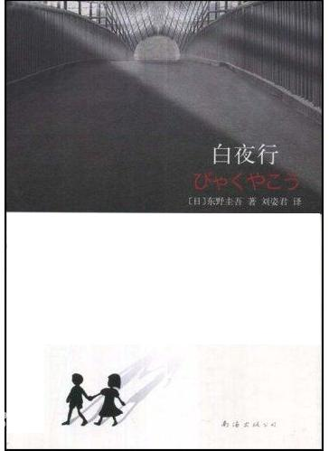
“一天中，太阳会升起，同时还会落下。人生也一样，有白天和黑夜，只是不会像太阳那样，有定时的日出和日落。有些人一辈子都活在太阳的照耀下，也有些人不得不一直活在漆黑的深夜里。人害怕的，就是本来一直存在的太阳落下不再升起，也就是非常害怕原本照在身上的光芒消失。”
一边是罪，一边是爱。
一边是黑，一边是白。
一边是正，一边是邪。
一边是显，一边是隐。
表面上纯洁美丽的雪穗是罪恶的，她黑暗的童年阴影无法去除，所以生命中没有太阳。桐原亮司表面上是神秘而且阴暗的，但他承受了父亲罪行的后果，为雪穗不惜一切，他代替了太阳，成为雪穗的亮光，她便可以在白夜中行走。
我的天空里没有太阳，总是黑夜，但并不暗，因为有东西代替了太阳，虽然没有太阳那样明亮，但对我来说已经足够。凭借这份亮光，我便能把黑夜当成白天。
我从来没有太阳，所以不怕失去。
21 《东方快车谋杀案》
原作名：Murder on the Orient Express
作者：[英]阿加莎·克里斯蒂
译者：陈尧光
类别：小说(推理)
《东方快车谋杀案》，创作灵感源于两个真实事件： 一是1929年，阿加莎·克里斯蒂搭乘的东方快车，因为暴风雪困在土耳其境内达六天之久； 二是1932年，飞行上校查尔斯·林白和安妮·林白的一岁儿子遭绑架，并被勒索50000美元。可令人难过的是，赎金到手后，绑匪却残忍撕票。小林白残缺的尸体被发现位于新泽西州的家不远处。
在此之后，林白家中的一名英国仆人接受调查，仆人不堪忍受压力而自杀；不久，家中另外一位德国花匠也遭怀疑，亦自杀身亡。直到1934年，警方终于从一张已停止流通的黄金券追踪到德国移民布鲁诺，并在他家中发现大量黄金券。嫌疑人布鲁诺被逮捕，但在法庭审讯中，他却拒绝认罪。1936年，布鲁诺被电刑处死。
于是，根据自己的经历和那桩震惊欧洲的大案，公认侦探推理小说女王阿加莎·克里斯蒂创作了这样一个有嚼头的故事：在“东方快车”上，发生了一起离奇的命案。每个人都有作案的嫌疑，而比利时大侦探波洛在没有任何高科技探案手段的辅助下，经过缜密的逻辑分析，终于让真相大白。
故事情节离奇，但是逻辑紧密，布局的巧妙出人意料，而谜底揭穿时，又十分合理，《东方快车谋杀案》无疑是阿加莎·克里斯蒂作品中的经典。
除此之外，令人称道的当然还有那个天才般的侦探波洛。无论外表还是性格，波洛都十分独特。而故事中身份地位、性格形象各异的十二个“陪审团成员”，不仅成为文学史上的经典，更为其他类型的叙事作品提供了蓝本。
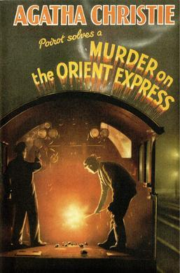
“当一个生命逝去时，会有十几个灵魂跟着支离破碎。”
“生活可以迷失方向，但不知道自己在哪儿可不行。”
The impossible could not have happened, therefore the impossible must be possible in spite of appearances.
不可能的事不可能已经发生，因此不可能的事尽管看起来不可能，但肯定有可能发生。
22 《苏菲的世界》
原作名：Sofies verden
作者：[挪威]乔斯坦·贾德
译者：萧宝森
类别：哲学
《苏菲的世界》是挪威作家乔斯坦·贾德创作的一本关于西方哲学史的长篇小说，它以小说的形式，通过一名哲学导师向一个叫苏菲的女孩传授哲学知识的经过，揭示了西方哲学史发展的历程。
14岁的少女苏菲某天放学回家，发现了神秘的一封信。----你是谁？----世界从哪里来？就这样，在一位神秘导师的指导引下，苏菲开始思索从古希腊到康德，从祁克果到佛洛伊德等各位大师所思考的根本问题。与此同时，苏菲不断接到了些极不寻常的来信，世界像迹团一般在她眼底展开。苏菲运用少女天生的悟性与后天知识，企图解开这些迹团然而事实真相远比她所想的更怪异、更离奇……《苏菲的世界》，即是智慧的世界，梦的世界。它将会唤醒每个人内心深处对生命的赞叹与对人生终极意义的关怀和好奇。
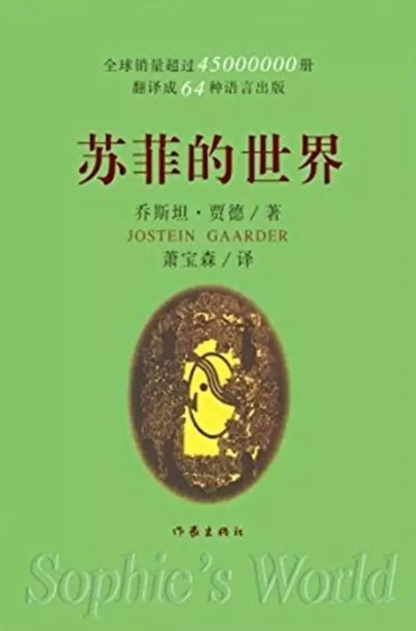
“生命本来就是悲伤而严肃的。我们来到这个美好的世界里，彼此相逢，彼此问候，并结伴同游一段短暂的时间。然后我们就失去了对方，并且莫名其妙就消失了，就像我们突然莫名其妙地来到世上一般。”
“真正的知识来自内心，而不是得自别人的传授。同时，唯有出自内心的知识，才能使人拥有真正的智慧。”
“Where both reason and experience fall short, there occurs a vacuum that can be filled by faith.”
“理智和经验都缺失时，就会出现一个真空，这个真空可以由信仰填补。”
“我们可能会成为各种事物的奴隶，我们甚至可能成为我们的自我中心思想的奴隶。独立与自由正是我们超脱自我的欲望与恶念的方法。”
“在整部哲学史中，哲学家们一直想要探索人的本性。但萨特相信，人并没有一种不变的“本性”。因此，追求广泛的生命的“意识”是没有用的。换句话说，我们是注定要自己创造这种意义。我们就像还没背好台词就被拉上舞台的演员，没有剧本，也没有提词人低声告诉我们应该怎么做。我们必须自己决定该怎么活。”
23 《佛陀传》
副标题：全世界影响力最大的佛陀传记
原作名：Old Path White Clouds
作者：[法]一行禅师
译者：何蕙仪
类别：传记
全世界佛学爱好者的必读书和入门书！佛法的起源与奥妙，就这样在您面前徐徐展开。本书原名《故道白云》。
自从1991年在美国第一次出版以来，二十多年的时间，本书已成为全世界佛学爱好者的必读书和入门书。
一行禅师沉稳迷人地讲述了佛陀释迦牟尼从出生、成长、出家、修行、得道、弘法，直至灭寂的完整一生。
世人似乎是从本书中第一次发现，佛陀从来不是神，而是一个人。他没有任何神通，和我们一样会困惑和痛苦，他也有家人，有妻子和儿子，只是他离开了他们，独自走上了修行成佛，拯救众生的道路。
作者一行禅师，当今世上最有影响力的禅宗僧人，1926年生于越南，16岁出家。1960年代，得到普林斯顿大学支持，赴美国学习，先后在康奈尔大学和哥伦比亚大学讲授佛法。一生传播贴近普通人的“生活佛法”，传递正念生活之道，同时宣扬非暴力的和平理念。1967年，一行禅师被黑人民权领袖马丁.路德.金提名为诺贝尔和平奖候选人。 1973年，越南政府取消他的护照，拒绝让他回到越南，一行禅师流亡到法国。
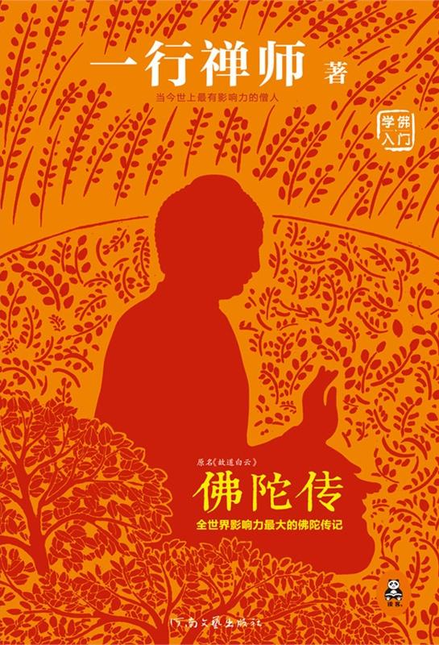
“在你内心完全接受之前，不要轻易地追随他人的教法”。
“真理之路，只有两种错误：其一、半途而废；其二、从未开始”。
“你们背着过去的负担，不停地试图改变无法预知的未来，就是时刻在失去当下”。
“停止在憎恨和暴力的路上走，那便是你最伟大的善行了。”
“假使你想你所爱的人快乐，你一定要学习去了解他们的苦恼与期望。当你了解他们，你便可以帮助他们舒解苦恼和达成愿望。这才是真爱。如果你单是要他们跟随你的意愿而忽略了他们的需要，这便绝不是真爱。这只是占有和支配别人的欲望，以及试图满足自己需要的错误途径。”
小智雅汇 2018-04-07 17:18:21
－End－